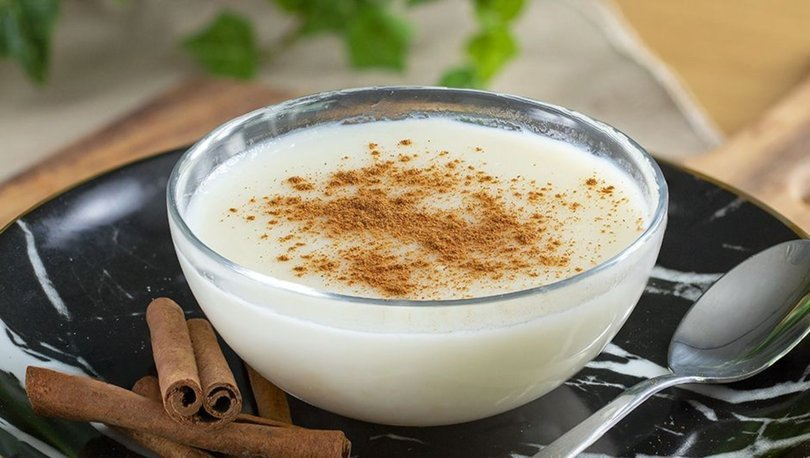

Sütlaç
Sütlaç, ''sütlü aş'' veya ''sütlü pirinç'' adlarıyla ilk olarak 15. Yüzyılda tıbbi kitaplarda ve Kaygusuz Abdal'ın şiirlerinde geçer. İtalyan mutfağına da giren sütlaç, Papa V. Pius'ın 1570'de verdiği bir ziyafetin üçüncü yemeği olarak ''üzerine şeker ve tarçın serpilmiş Türk usulü sütlü pirinç'' diye sunuldu.
5-8 Kişilik | Hazırlama Süresi: 10 Dakika (Tahmini) | Pişirme Süresi: 15 Dakika